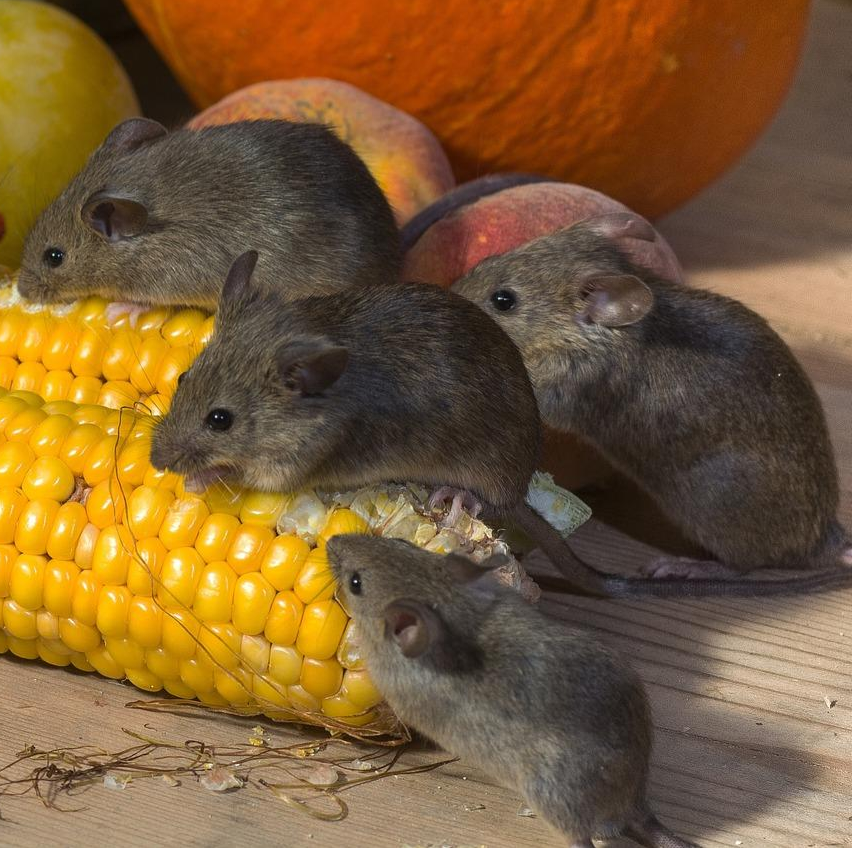

¿Qué es un arriero o ratón doméstico?
En Puerto Rico, el término “arriero” o “jarriero” se usa comúnmente para referirse al
ratón doméstico (Mus musculus). Es un roedor pequeño que ha aprendido a convivir cerca de los humanos,
adaptándose a entornos residenciales y comerciales donde encuentra alimento y refugio.
Características
- Cuerpo pequeño, 6–10 cm de largo (sin incluir la cola).
- Pelaje gris o pardo claro en la parte superior y más claro en el vientre.
- Ojos grandes y orejas prominentes.
- Cola larga y sin pelo.
- Alta capacidad reproductiva.
Riesgos y problemas asociados
Los ratones domésticos no solo causan molestias, sino que también pueden representar riesgos:
- Contaminación de alimentos.
- Transmisión de enfermedades (a través de heces, orina y parásitos).
- Daño a cables, aislamiento y estructuras al morder.
- Reproducción rápida y difícil de controlar sin intervención profesional.
Señales de infestación
- Excrementos pequeños en áreas ocultas.
- Ruido de rasguños dentro de paredes o techos por la noche.
- Marcas de mordeduras en empaques de alimentos o cables.
- Presencia de nidos con material suave (papel, tela, fibra).
Prevención
- Sellar grietas y huecos alrededor de la casa.
- Almacenar alimentos en envases herméticos.
- Mantener áreas limpias y sin residuos de comida.
- Reducir el acceso a zonas de refugio como cajas, madera o clósets desordenados.
Tratamiento Profesional
En Bugs Or Us PR, evaluamos la propiedad para identificar puntos de entrada,
patrones de actividad y condiciones que favorecen la infestación. Aplicamos métodos
dirigidos para el control efectivo de ratones domésticos, priorizando la seguridad
de su familia y mascotas, y minimizando el uso de productos innecesarios.
Solicitar Servicio por WhatsApp